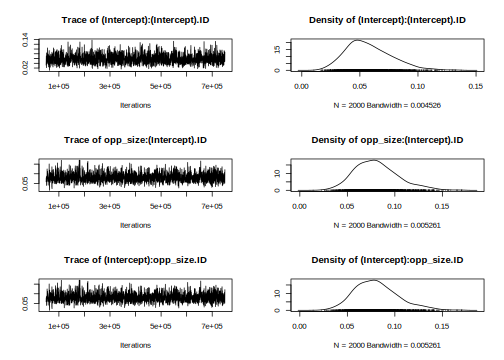
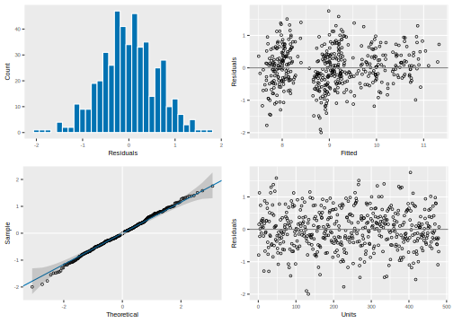
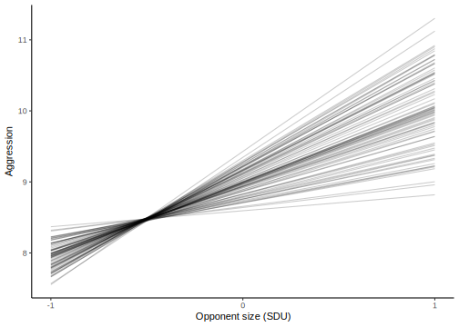
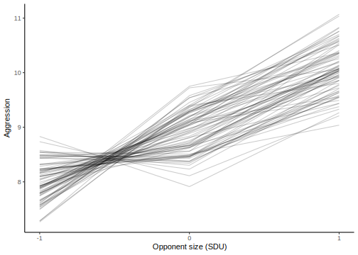
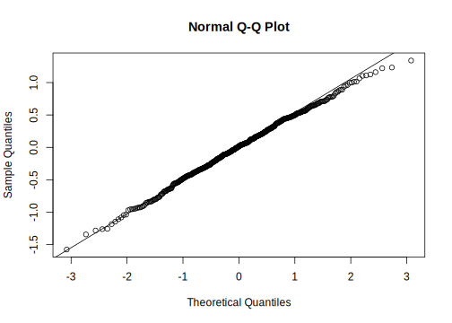
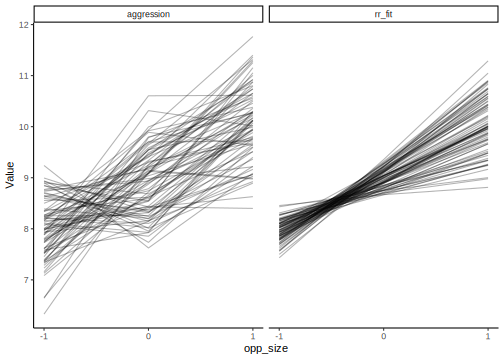
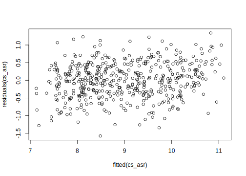
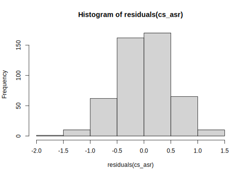

9.2 Practical
In this practical, we will revisit our analysis on unicorn aggressivity. Honestly, we can use any other data with repeated measures for this exercise but I just ❤️ unicorns.
9.2.1 R packages needed
First we load required libraries
library(lme4)
library(tidyverse)
library(broom.mixed)
library(asreml)
library(MCMCglmm)
library(bayesplot)9.2.2 Refresher on unicorn aggression
In the previous, practical on linear mixed models, we simply explored the differences among individuals in their mean aggression (Intercept), but we assumed that the response to the change in aggression with the opponent size (i.e. plasticity) was the same for all individuals. However, this plastic responses can also vary amon individuals. This is called IxE, or individual by environment interaction. To test if individuals differ in their plasticity we can use a random regression, whcih is simply a mixed-model where we fit both a random intercept and a random slope effect.
Following analysis from the previous pratical, our model of interest using scaled covariate was:
aggression ~ opp_size + body_size_sc + assay_rep_sc + block
+ (1 | ID)We should start by loading the data and refitting the model using lmer().
unicorns <- read.csv("data/unicorns_aggression.csv")
unicorns <- unicorns %>%
mutate(
body_size_sc = scale(body_size),
assay_rep_sc = scale(assay_rep, scale = FALSE)
)
m_mer <- lmer(
aggression ~ opp_size + body_size_sc + assay_rep_sc + block
+ (1 | ID),
data = unicorns
)
summary(m_mer)## Linear mixed model fit by REML. t-tests use Satterthwaite's method ['lmerModLmerTest']
## Formula: aggression ~ opp_size + body_size_sc + assay_rep_sc + block + (1 | ID)
## Data: unicorns
##
## REML criterion at convergence: 1136.5
##
## Scaled residuals:
## Min 1Q Median 3Q Max
## -2.85473 -0.62831 0.02545 0.68998 2.74064
##
## Random effects:
## Groups Name Variance Std.Dev.
## ID (Intercept) 0.02538 0.1593
## Residual 0.58048 0.7619
## Number of obs: 480, groups: ID, 80
##
## Fixed effects:
## Estimate Std. Error df t value Pr(>|t|)
## (Intercept) 9.00181 0.03907 78.07315 230.395 <2e-16 ***
## opp_size 1.05141 0.04281 396.99857 24.562 <2e-16 ***
## body_size_sc 0.03310 0.03896 84.21144 0.850 0.398
## assay_rep_sc -0.05783 0.04281 396.99857 -1.351 0.177
## block -0.02166 0.06955 397.00209 -0.311 0.756
## ---
## Signif. codes: 0 '***' 0.001 '**' 0.01 '*' 0.05 '.' 0.1 ' ' 1
##
## Correlation of Fixed Effects:
## (Intr) opp_sz bdy_s_ assy__
## opp_size 0.000
## body_siz_sc 0.000 0.000
## assay_rp_sc 0.000 -0.100 0.000
## block 0.000 0.000 0.002 0.000We can now plot the predictions for each of our observations and plot for the observed and the fitted data for each individuals. Todo so we will use the augment() function from the 📦 broom.mixed.
Below, we plot the raw data for each individual in one panel, with the fitted slopes in a second panel. Because we have 2 blocks of data, and block is fitted as a fixed effect, for ease of presentation we need to either select only 1 block for representation, take teh avaerage over the block effect or do a more complex graph with the two blocks. Here I have selected only one of the blocks for this plot
pred_m_mer <- augment(m_mer) %>%
select(ID, block, opp_size, .fitted, aggression) %>%
filter(block == -0.5) %>%
gather(
type, aggression,
`.fitted`:aggression
)
ggplot(pred_m_mer, aes(x = opp_size, y = aggression, group = ID)) +
geom_line(alpha = 0.3) +
theme_classic() +
facet_grid(. ~ type)Figure 9.2: Predicted (from m_mer) and observed value of aggression as a function of opponent size in unicorns
This illustrates the importance of using model predictions to see whether the model actually fits the individual-level data well or not — while the diagnostic plots looked fine, and the model captures mean plasticity, here we can see that the model really doesn’t fit the actual data very well at all.
9.2.3 Random regression
9.2.3.1 with lme4
rr_mer <- lmer(
aggression ~ opp_size + body_size_sc + assay_rep_sc + block
+ (1 + opp_size | ID),
data = unicorns
)pred_rr_mer <- augment(rr_mer) %>%
select(ID, block, opp_size, .fitted, aggression) %>%
filter(block == -0.5) %>%
gather(type,aggression, `.fitted`:aggression)
ggplot(pred_rr_mer, aes(x = opp_size, y = aggression, group = ID)) +
geom_line(alpha = 0.3) +
theme_classic() +
facet_grid(. ~ type)
We can test the improvement of the model fit using the overloaded anova function in R to perform a likelihood ratio test (LRT):
anova(rr_mer, m_mer, refit = FALSE)| npar | AIC | BIC | logLik | deviance | Chisq | Df | Pr(>Chisq) | |
|---|---|---|---|---|---|---|---|---|
| m_mer | 7 | 1150.477 | 1179.693 | -568.2383 | 1136.477 | NA | NA | NA |
| rr_mer | 9 | 1092.356 | 1129.920 | -537.1780 | 1074.356 | 62.1206 | 2 | 0 |
We can see here that the LRT uses a chi-square test with 2 degrees of freedom, and indicates that the random slopes model shows a statistically significant improvement in model fit. The 2df are because there are two additional (co)variance terms estimated in the random regression model: a variance term for individual slopes, and the covariance (or correlation) between the slopes and intercepts. Let’s look at those values, and also the fixed effects parameters, via the model summary:
summary(rr_mer)## Linear mixed model fit by REML. t-tests use Satterthwaite's method ['lmerModLmerTest']
## Formula: aggression ~ opp_size + body_size_sc + assay_rep_sc + block +
## (1 + opp_size | ID)
## Data: unicorns
##
## REML criterion at convergence: 1074.4
##
## Scaled residuals:
## Min 1Q Median 3Q Max
## -3.04932 -0.59780 -0.02002 0.59574 2.68010
##
## Random effects:
## Groups Name Variance Std.Dev. Corr
## ID (Intercept) 0.05043 0.2246
## opp_size 0.19167 0.4378 0.96
## Residual 0.42816 0.6543
## Number of obs: 480, groups: ID, 80
##
## Fixed effects:
## Estimate Std. Error df t value Pr(>|t|)
## (Intercept) 9.00181 0.03902 78.44088 230.707 <2e-16 ***
## opp_size 1.05033 0.06123 79.50694 17.153 <2e-16 ***
## body_size_sc 0.02725 0.03377 84.34959 0.807 0.422
## assay_rep_sc -0.04702 0.03945 387.69415 -1.192 0.234
## block -0.02169 0.05973 318.19553 -0.363 0.717
## ---
## Signif. codes: 0 '***' 0.001 '**' 0.01 '*' 0.05 '.' 0.1 ' ' 1
##
## Correlation of Fixed Effects:
## (Intr) opp_sz bdy_s_ assy__
## opp_size 0.495
## body_siz_sc 0.000 0.000
## assay_rp_sc 0.000 -0.064 -0.006
## block 0.000 0.000 0.002 0.0009.2.3.2 with asreml
unicorns <- unicorns %>%
mutate( ID = as.factor(ID))
rr_asr <- asreml(
aggression ~ opp_size + body_size_sc + assay_rep_sc + block,
random = ~str(~ ID + ID:opp_size, ~us(2):id(ID)),
residual = ~ units,
data = unicorns,
maxiter = 200
)## Model fitted using the gamma parameterization.
## ASReml 4.1.0 Tue Feb 15 15:59:58 2022
## LogLik Sigma2 DF wall cpu
## 1 -109.426 0.463232 475 15:59:58 0.0
## 2 -105.050 0.454593 475 15:59:58 0.0
## 3 -101.814 0.443662 475 15:59:58 0.0
## 4 -100.814 0.433873 475 15:59:58 0.0
## 5 -100.683 0.428596 475 15:59:58 0.0
## 6 -100.682 0.428170 475 15:59:58 0.0plot(rr_asr)
summary(rr_asr, coef = TRUE)$coef.fixed## solution std error z.ratio
## block -0.02168725 0.05973354 -0.3630665
## assay_rep_sc -0.04702032 0.03944594 -1.1920191
## body_size_sc 0.02725092 0.03377443 0.8068506
## opp_size 1.05032703 0.06123110 17.1534907
## (Intercept) 9.00181250 0.03901766 230.7112239wald(rr_asr, ssType = "conditional", denDF = "numeric")## Model fitted using the gamma parameterization.
## ASReml 4.1.0 Tue Feb 15 16:00:00 2022
## LogLik Sigma2 DF wall cpu
## 1 -100.682 0.428168 475 16:00:00 0.0
## 2 -100.682 0.428168 475 16:00:00 0.0
## 3 -100.682 0.428168 475 16:00:00 0.0## $Wald
## [0;34m
## Wald tests for fixed effects.[0m
## [0;34mResponse: aggression[0m
##
## Df denDF F.inc F.con Margin Pr
## (Intercept) 1 78.3 65490 53230 0.00000
## opp_size 1 79.5 293 294 A 0.00000
## body_size_sc 1 84.3 1 1 A 0.42202
## assay_rep_sc 1 387.6 1 1 A 0.23398
## block 1 318.1 0 0 A 0.71680
##
## $stratumVariances
## df Variance ID+ID:opp_size!us(2)_1:1
## ID+ID:opp_size!us(2)_1:1 78.00483 0.4790737 5.216311
## ID+ID:opp_size!us(2)_2:1 0.00000 0.0000000 0.000000
## ID+ID:opp_size!us(2)_2:2 78.94046 1.1937287 0.000000
## units!R 318.05470 0.4281680 0.000000
## ID+ID:opp_size!us(2)_2:1 ID+ID:opp_size!us(2)_2:2 units!R
## ID+ID:opp_size!us(2)_1:1 -3.301137 0.5221955 1
## ID+ID:opp_size!us(2)_2:1 0.000000 0.0000000 1
## ID+ID:opp_size!us(2)_2:2 0.000000 3.9943993 1
## units!R 0.000000 0.0000000 1summary(rr_asr)$varcomp## component std.error z.ratio bound %ch
## ID+ID:opp_size!us(2)_1:1 0.05042932 0.02027564 2.487187 P 0
## ID+ID:opp_size!us(2)_2:1 0.09458336 0.02400745 3.939751 P 0
## ID+ID:opp_size!us(2)_2:2 0.19165924 0.04832059 3.966409 P 0
## units!R 0.42816954 0.03395320 12.610582 P 0rio_asr <- asreml(
aggression ~ opp_size + body_size_sc + assay_rep_sc + block,
random = ~ ID,
residual = ~units,
data = unicorns,
maxiter = 200
)## Model fitted using the gamma parameterization.
## ASReml 4.1.0 Tue Feb 15 16:00:01 2022
## LogLik Sigma2 DF wall cpu
## 1 -132.611 0.560353 475 16:00:01 0.0
## 2 -132.106 0.567043 475 16:00:01 0.0
## 3 -131.796 0.575157 475 16:00:01 0.0
## 4 -131.743 0.580762 475 16:00:01 0.0
## 5 -131.742 0.580480 475 16:00:01 0.0pchisq(2 * (rr_asr$loglik - rio_asr$loglik), 2,
lower.tail = FALSE
)## [1] 3.241026e-14vpredict(rr_asr, cor_is ~ V2 / (sqrt(V1) * sqrt(V3)))## Estimate SE
## cor_is 0.9620736 0.1773965pred_rr_asr <- as.data.frame(predict(rr_asr,
classify = "opp_size:ID",
levels = list(
"opp_size" =
c(opp_size = -1:1)
)
)$pvals)## Model fitted using the gamma parameterization.
## ASReml 4.1.0 Tue Feb 15 16:00:01 2022
## LogLik Sigma2 DF wall cpu
## 1 -100.682 0.428168 475 16:00:02 0.1
## 2 -100.682 0.428168 475 16:00:02 0.0
## 3 -100.682 0.428168 475 16:00:02 0.0p_rr <- ggplot(pred_rr_asr, aes(x = opp_size,
y = predicted.value,
group = ID)) +
geom_line(alpha = 0.2) +
scale_x_continuous(breaks = c(-1, 0, 1)) +
labs(
x = "Opponent size (SDU)",
y = "Aggression"
) +
theme_classic()
p_rr
9.2.3.3 with MCMCglmm
prior_RR <- list(
R = list(V = 1, nu = 0.002),
G = list(
G1 = list(V = diag(2)*0.02, nu = 3,
alpha.mu = rep(0, 2),
alpha.V= diag(1000, 2, 2))))
rr_mcmc <- MCMCglmm(
aggression ~ opp_size + assay_rep_sc + body_size_sc + block,
random = ~ us(1 + opp_size):ID,
rcov = ~ units,
family = "gaussian",
prior = prior_RR,
nitt=750000,
burnin=50000,
thin=350,
verbose = FALSE,
data = unicorns,
pr = TRUE,
saveX = TRUE, saveZ = TRUE)plot(rr_mcmc$VCV)
posterior.mode(rr_mcmc$VCV[, "opp_size:opp_size.ID"]) # mean## var1
## 0.2040523HPDinterval(rr_mcmc$VCV[, "opp_size:opp_size.ID"])## lower upper
## var1 0.1172616 0.3094872
## attr(,"Probability")
## [1] 0.95rr_cor_mcmc <- rr_mcmc$VCV[, "opp_size:(Intercept).ID"] /
(sqrt(rr_mcmc$VCV[, "(Intercept):(Intercept).ID"]) *
sqrt(rr_mcmc$VCV[, "opp_size:opp_size.ID"]))
posterior.mode(rr_cor_mcmc)## var1
## 0.8466038HPDinterval(rr_cor_mcmc)## lower upper
## var1 0.5169232 0.9749839
## attr(,"Probability")
## [1] 0.95df_rand <- cbind(unicorns,
rr_fit = predict(rr_mcmc, marginal = NULL)
) %>%
select(ID, opp_size, rr_fit, aggression) %>%
group_by(ID, opp_size) %>%
summarise(
rr_fit = mean(rr_fit),
aggression = mean(aggression)
) %>%
gather(
Type, Value,
rr_fit:aggression
)## `summarise()` has grouped output by 'ID'. You can override using the `.groups` argument.# Plot separate panels for individual lines of each type
ggplot(df_rand, aes(x = opp_size, y = Value, group = ID)) +
geom_line(alpha = 0.3) +
scale_x_continuous(breaks = c(-1, 0, 1)) +
theme_classic() +
facet_grid(. ~ Type)
| Method | v_int | cov | v_sl | v_r |
|---|---|---|---|---|
| lmer | 0.0504347 | 0.0945863 | 0.1916653 | 0.4281625 |
| asreml | 0.0504293 | 0.0945834 | 0.1916592 | 0.4281695 |
| MCMCglmm | 0.0446102 | 0.0768445 | 0.2040523 | 0.4181750 |
9.2.4 Character-State approach
Need to pivot to a wider format
unicorns_cs <- unicorns %>%
select(ID, body_size, assay_rep, block, aggression, opp_size) %>%
mutate(
opp_size = recode(as.character(opp_size), "-1" = "s", "0" = "m", "1" = "l")
) %>%
dplyr::rename(agg = aggression) %>%
pivot_wider(names_from = opp_size, values_from = c(agg, assay_rep)) %>%
mutate(
body_size_sc = scale(body_size),
opp_order = as.factor(paste(assay_rep_s, assay_rep_m, assay_rep_l, sep = "_"))
)
str(unicorns_cs)## tibble [160 × 11] (S3: tbl_df/tbl/data.frame)
## $ ID : Factor w/ 80 levels "ID_1","ID_10",..: 1 1 2 2 3 3 4 4 5 5 ...
## $ body_size : num [1:160] 206 207 283 288 229 ...
## $ block : num [1:160] -0.5 0.5 -0.5 0.5 -0.5 0.5 -0.5 0.5 -0.5 0.5 ...
## $ agg_s : num [1:160] 7.02 8.44 7.73 8.08 8.06 8.16 8.16 8.51 7.59 6.67 ...
## $ agg_l : num [1:160] 10.67 10.51 10.81 10.67 9.77 ...
## $ agg_m : num [1:160] 10.22 8.95 9.43 9.46 7.63 ...
## $ assay_rep_s : int [1:160] 1 3 2 2 1 1 3 3 1 1 ...
## $ assay_rep_l : int [1:160] 2 2 1 1 2 2 2 1 2 2 ...
## $ assay_rep_m : int [1:160] 3 1 3 3 3 3 1 2 3 3 ...
## $ body_size_sc: num [1:160, 1] -1.504 -1.456 0.988 1.143 -0.76 ...
## ..- attr(*, "scaled:center")= num 253
## ..- attr(*, "scaled:scale")= num 31.1
## $ opp_order : Factor w/ 6 levels "1_2_3","1_3_2",..: 2 5 4 4 2 2 5 6 2 2 ...head(unicorns_cs)## # A tibble: 6 × 11
## ID body_size block agg_s agg_l agg_m assay_rep_s assay_rep_l assay_rep_m
## <fct> <dbl> <dbl> <dbl> <dbl> <dbl> <int> <int> <int>
## 1 ID_1 206. -0.5 7.02 10.7 10.2 1 2 3
## 2 ID_1 207. 0.5 8.44 10.5 8.95 3 2 1
## 3 ID_10 283. -0.5 7.73 10.8 9.43 2 1 3
## 4 ID_10 288 0.5 8.08 10.7 9.46 2 1 3
## 5 ID_11 229. -0.5 8.06 9.77 7.63 1 2 3
## 6 ID_11 236. 0.5 8.16 10.8 8.23 1 2 3
## # … with 2 more variables: body_size_sc <dbl[,1]>, opp_order <fct>cs_asr <- asreml(
cbind(agg_s, agg_m, agg_l) ~ trait + trait:body_size_sc +
trait:block +
trait:opp_order,
random =~ ID:us(trait),
residual =~ units:us(trait),
data = unicorns_cs,
maxiter = 200
)## Warning in type.convert.default(x): 'as.is' should be specified by the caller; using TRUE
## Warning in type.convert.default(x): 'as.is' should be specified by the caller; using TRUE
## Warning in type.convert.default(x): 'as.is' should be specified by the caller; using TRUE
## Warning in type.convert.default(x): 'as.is' should be specified by the caller; using TRUE## Model fitted using the sigma parameterization.
## ASReml 4.1.0 Tue Feb 15 16:05:20 2022
## LogLik Sigma2 DF wall cpu
## 1 -150.172 1.0 456 16:05:20 0.0
## 2 -129.658 1.0 456 16:05:20 0.0
## 3 -110.454 1.0 456 16:05:20 0.0
## 4 -101.879 1.0 456 16:05:20 0.0
## 5 -100.092 1.0 456 16:05:20 0.0
## 6 -100.054 1.0 456 16:05:20 0.0
## 7 -100.054 1.0 456 16:05:20 0.0plot(residuals(cs_asr) ~ fitted(cs_asr))
qqnorm(residuals(cs_asr))
qqline(residuals(cs_asr))hist(residuals(cs_asr))
summary(cs_asr, all = T)$coef.fixed## NULLwald(cs_asr, ssType = "conditional", denDF = "numeric")## Warning in type.convert.default(x): 'as.is' should be specified by the caller; using TRUE
## Warning in type.convert.default(x): 'as.is' should be specified by the caller; using TRUE
## Warning in type.convert.default(x): 'as.is' should be specified by the caller; using TRUE
## Warning in type.convert.default(x): 'as.is' should be specified by the caller; using TRUE## Model fitted using the sigma parameterization.
## ASReml 4.1.0 Tue Feb 15 16:05:21 2022
## LogLik Sigma2 DF wall cpu
## 1 -100.054 1.0 456 16:05:21 0.0
## 2 -100.054 1.0 456 16:05:21 0.0
## Calculating denominator DF## $Wald
## [0;34m
## Wald tests for fixed effects.[0m
## [0;34mResponse: cbind(agg_s, agg_m, agg_l)[0m
##
## Df denDF F.inc F.con Margin Pr
## trait 3 73.2 21080.0 21080.0 0.00000
## trait:body_size_sc 3 86.6 0.4 0.5 B 0.68324
## trait:block 3 75.2 0.6 0.3 B 0.82418
## trait:opp_order 15 240.5 1.3 1.3 B 0.23282
##
## $stratumVariances
## NULLsummary(cs_asr)$varcomp[, c("component", "std.error")]## component std.error
## ID:trait!trait_agg_s:agg_s 0.192959991 0.06321872
## ID:trait!trait_agg_m:agg_s -0.168519644 0.05085583
## ID:trait!trait_agg_m:agg_m 0.245594370 0.07096325
## ID:trait!trait_agg_l:agg_s -0.151990204 0.05660748
## ID:trait!trait_agg_l:agg_m 0.158418588 0.06374995
## ID:trait!trait_agg_l:agg_l 0.312548090 0.09125168
## units:trait!R 1.000000000 NA
## units:trait!trait_agg_s:agg_s 0.318089965 0.05198135
## units:trait!trait_agg_m:agg_s 0.010362390 0.03695483
## units:trait!trait_agg_m:agg_m 0.322379911 0.05248291
## units:trait!trait_agg_l:agg_s -0.009311656 0.04168455
## units:trait!trait_agg_l:agg_m 0.159240476 0.04569305
## units:trait!trait_agg_l:agg_l 0.405942147 0.06679700cs_idh_asr <- asreml(
cbind(agg_s, agg_m, agg_l) ~ trait + trait:body_size_sc +
trait:block +
trait:opp_order,
random = ~ ID:idh(trait),
residual = ~ units:us(trait),
data = unicorns_cs,
maxiter = 200
)## Warning in type.convert.default(x): 'as.is' should be specified by the caller; using TRUE
## Warning in type.convert.default(x): 'as.is' should be specified by the caller; using TRUE
## Warning in type.convert.default(x): 'as.is' should be specified by the caller; using TRUE
## Warning in type.convert.default(x): 'as.is' should be specified by the caller; using TRUE## Model fitted using the sigma parameterization.
## ASReml 4.1.0 Tue Feb 15 16:05:22 2022
## LogLik Sigma2 DF wall cpu
## 1 -147.068 1.0 456 16:05:22 0.0
## 2 -131.268 1.0 456 16:05:22 0.0
## 3 -116.908 1.0 456 16:05:22 0.0
## 4 -110.996 1.0 456 16:05:22 0.0
## 5 -109.905 1.0 456 16:05:22 0.0
## 6 -109.866 1.0 456 16:05:22 0.0
## 7 -109.863 1.0 456 16:05:22 0.0pchisq(2 * (cs_asr$loglik - cs_idh_asr$loglik), 3,
lower.tail = FALSE
)## [1] 0.0002038324vpredict(cs_asr, cor_S_M ~ V2 / (sqrt(V1) * sqrt(V3)))## Estimate SE
## cor_S_M -0.7741189 0.1869789vpredict(cs_asr, cor_M_L ~ V5 / (sqrt(V3) * sqrt(V6)))## Estimate SE
## cor_M_L 0.5717926 0.1469504vpredict(cs_asr, cor_S_L ~ V4 / (sqrt(V1) * sqrt(V6)))## Estimate SE
## cor_S_L -0.6189044 0.1912133vpredict(cs_asr, prop_S ~ V1 / (V1 + V8))## Estimate SE
## prop_S 0.3775756 0.09950306vpredict(cs_asr, prop_M ~ V3 / (V3 + V10))## Estimate SE
## prop_M 0.432404 0.0934477vpredict(cs_asr, prop_L ~ V6 / (V6 + V13))## Estimate SE
## prop_L 0.4350067 0.09498512init_CS_cor1_tri <- c(
0.999,
0.999, 0.999,
1, 1, 1
)
names(init_CS_cor1_tri) <- c(
"F",
"F", "F",
"U", "U", "U"
)
cs_asr_cor1_tri <- asreml(
cbind(agg_s, agg_m, agg_l) ~ trait + trait:body_size_sc +
trait:block +
trait:opp_order,
random = ~ ID:corgh(trait, init = init_CS_cor1_tri),
residual = ~ units:us(trait),
data = unicorns_cs,
maxiter = 500
)## Warning in type.convert.default(x): 'as.is' should be specified by the caller; using TRUE
## Warning in type.convert.default(x): 'as.is' should be specified by the caller; using TRUE## Model fitted using the sigma parameterization.
## ASReml 4.1.0 Tue Feb 15 16:05:23 2022
## LogLik Sigma2 DF wall cpu
## 1 -228.016 1.0 456 16:05:23 0.0 (3 restrained)
## 2 -150.014 1.0 456 16:05:23 0.0
## 3 -129.580 1.0 456 16:05:23 0.0
## 4 -119.992 1.0 456 16:05:23 0.0 (1 restrained)
## 5 -116.907 1.0 456 16:05:23 0.0 (1 restrained)
## 6 -115.772 1.0 456 16:05:23 0.0
## 7 -115.647 1.0 456 16:05:23 0.0
## 8 -115.588 1.0 456 16:05:23 0.0
## 9 -115.533 1.0 456 16:05:23 0.0
## 10 -115.479 1.0 456 16:05:23 0.0
## 11 -115.427 1.0 456 16:05:23 0.0
## 12 -115.378 1.0 456 16:05:23 0.0
## 13 -115.331 1.0 456 16:05:23 0.0
## 14 -115.289 1.0 456 16:05:23 0.0
## 15 -115.251 1.0 456 16:05:23 0.0
## 16 -115.217 1.0 456 16:05:23 0.0
## 17 -115.188 1.0 456 16:05:23 0.0
## 18 -115.162 1.0 456 16:05:23 0.0
## 19 -115.141 1.0 456 16:05:23 0.0
## 20 -115.122 1.0 456 16:05:23 0.0
## 21 -115.107 1.0 456 16:05:23 0.0
## 22 -115.093 1.0 456 16:05:23 0.0
## 23 -115.082 1.0 456 16:05:23 0.0
## 24 -115.073 1.0 456 16:05:23 0.0 (1 restrained)
## 25 -115.064 1.0 456 16:05:23 0.0
## 26 -115.064 1.0 456 16:05:23 0.0pchisq(2 * (cs_asr$loglik - cs_asr_cor1_tri$loglik),
3,
lower.tail = FALSE
)## [1] 1.367792e-06df_CS_pred <- as.data.frame(predict(cs_asr,
classify = "trait:ID"
)$pvals)## Warning in type.convert.default(x): 'as.is' should be specified by the caller; using TRUE
## Warning in type.convert.default(x): 'as.is' should be specified by the caller; using TRUE
## Warning in type.convert.default(x): 'as.is' should be specified by the caller; using TRUE
## Warning in type.convert.default(x): 'as.is' should be specified by the caller; using TRUE## Model fitted using the sigma parameterization.
## ASReml 4.1.0 Tue Feb 15 16:05:23 2022
## LogLik Sigma2 DF wall cpu
## 1 -100.054 1.0 456 16:05:23 0.1
## 2 -100.054 1.0 456 16:05:23 0.0
## 3 -100.054 1.0 456 16:05:23 0.0# Add numeric variable for easier plotting
# of opponent size
df_CS_pred <- df_CS_pred %>%
mutate(sizeNum = ifelse(trait == "agg_s", -1,
ifelse(trait == "agg_m", 0, 1)
))
p_cs <- ggplot(df_CS_pred, aes(
x = sizeNum,
y = predicted.value,
group = ID
)) +
geom_line(alpha = 0.2) +
scale_x_continuous(breaks = c(-1, 0, 1)) +
labs(
x = "Opponent size (SDU)",
y = "Aggression"
) +
theme_classic()
p_csunicorns <- arrange(unicorns, opp_size, by_group = ID)
p_obs <- ggplot(unicorns[unicorns$block==-0.5,], aes(x = opp_size, y = aggression, group = ID)) +
geom_line(alpha = 0.3) +
scale_x_continuous(breaks = c(-1, 0, 1)) +
labs(
x = "Opponent size (SDU)",
y = "Aggression"
) +
ggtitle("Observed") +
ylim(5.9, 12) +
theme_classic()
p_rr <- p_rr + ggtitle("Random regression") + ylim(5.9, 12)
p_cs <- p_cs + ggtitle("Character-State") + ylim(5.9, 12)
p_obs + p_rr + p_cs## Warning: Removed 2 row(s) containing missing values (geom_path).9.2.5 From random regression to character-state
var_mat_asr <- function(model, var_names, pos){
size <- length(var_names)
v_out <- matrix(NA, ncol = size, nrow = size)
rownames(v_out) <- var_names
colnames(v_out) <- var_names
v_out[upper.tri(v_out, diag = TRUE)] <- summary(model)$varcomp[pos, 1]
v_out <- forceSymmetric(v_out, uplo = "U")
as.matrix(v_out)
}
v_id_rr <- var_mat_asr(rr_asr, c("v_int", "v_sl"), 1:3)
knitr::kable(v_id_rr, digits = 3)| v_int | v_sl | |
|---|---|---|
| v_int | 0.050 | 0.095 |
| v_sl | 0.095 | 0.192 |
v_id_cs <- var_mat_asr(cs_asr, c("v_s", "v_m", "v_l"), 1:6)
knitr::kable(v_id_cs, digits = 3)| v_s | v_m | v_l | |
|---|---|---|---|
| v_s | 0.193 | -0.169 | -0.152 |
| v_m | -0.169 | 0.246 | 0.158 |
| v_l | -0.152 | 0.158 | 0.313 |
We also need to make a second matrix, let’s call it Q (no particular reason, pick something else if you want). This is going to contain the values needed to turn an individual’s intercept (mean) and slope (plasticity) deviations into estimates of environment-specific individual merit in a character state model.
What do we mean by this? Well if an individual i has an intercept deviation of IDint(i) and a slope deviation of IDslp(i) for a given value of the environment opp_size we might be interested in:
IDi = (1 x IDint(i)) + (opp_size x IDslp(i))
We want to look at character states representing the three observed values of opp_size here so
Q <- as.matrix(cbind(c(1, 1, 1),
c(-1, 0, 1)))Then we can generate our among-individual covariance matrix environment specific aggresiveness, which we can call ID_cs_rr by matrix multiplication:
ID_cs_rr<- Q %*% v_id_rr %*%t(Q) #where t(Q) is the transpose of Q
#and %*% is matrix multiplication
ID_cs_rr #rows and columns correspond to aggressiveness at opp_size=-1,0,1 in that order## [,1] [,2] [,3]
## [1,] 0.05292184 -0.04415404 -0.1412299
## [2,] -0.04415404 0.05042932 0.1450127
## [3,] -0.14122993 0.14501267 0.4312553cov2cor(ID_cs_rr) #Converting to a correlation scale## [,1] [,2] [,3]
## [1,] 1.0000000 -0.8546956 -0.9348503
## [2,] -0.8546956 1.0000000 0.9833253
## [3,] -0.9348503 0.9833253 1.0000000cov2cor(v_id_cs)## v_s v_m v_l
## v_s 1.0000000 -0.7741189 -0.6189044
## v_m -0.7741189 1.0000000 0.5717926
## v_l -0.6189044 0.5717926 1.00000009.2.6 Conclusions
9.2.7 Happy multivariate models

Figure 9.3: A female blue dragon of the West